Chapter 10. 순환 신경망(RNN : Recurrent Neural Networks)¶
1절. 순환 데이터¶
순차 데이터(시계열 데이터)¶
- 순서가 있는 데이터
- 순차 데이터 처리를 통해 정확한 예측을 도출하려면 과거의 데이터 정보 필요
- 시간적 순서 / 공간적 순서 모두 가능
- ex) 주식 가격, 텍스트 데이터, 오디오 데이터
응용 분야¶
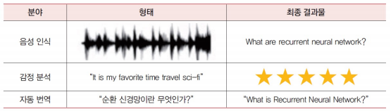
표준 신경망과 순환 신경망¶
순환 신경망(RNN : Recurrent Neural Network)¶
- 표준 신경망의 구조를 데이터가 잘 처리되게끔 변경한 신경망
- 표준 신경망 : 일부만 예측 가능 / 멀리 떨어진 과거의 데이터는 희미
예시 : 빈칸 예측 문제¶
- "난 주말이면 영화를 보기 위해 우리 동네의 ____에 간다."
-> 이전 단어로부터 새로운 단어 예측
순환 신경망 기능¶
- 가변 길이 입력 처리 가능
- 장기 의존성 추적 가능
- 순서에 대한 정보 유지
- 시퀀스 전체의 파라미터 공유 가능
순환 데이터¶
- 본격적으로 순환 신경망을 학습시키는 데 사용되는 데이터
- 순환 신경망 학습을 위해 데이터를 일정 길이로 잘라서 여러 훈련 샘플 생성
순환 데이터 예시¶
- 일정한 길이(윈도우 크기 = 3)로 자른 후 여러 개의 훈련 샘플 생성
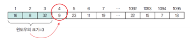
- 전체 데이터를 다음과 같이 크기가 3인 샘플과 정답으로 분리
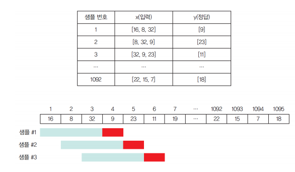
예제 : 데이터 다운 후 그래프 표현¶
# 라이브러리 포함
import FinanceDataReader as fdr
import numpy as np
import matplotlib.pyplot as plt
# 삼성전자 코드 = '005930', 2020년 데이터부터 다운로드
samsung = fdr.DataReader('005930', '2020')
# 시작가격
seq_data = (samsung[['Open']]).to_numpy() # 선형 그래프
plt.plot(seq_data, color = 'blue')
plt.title("Samsung Electronics Stock Price")
plt.xlabel("days")
plt.xlabel("")
plt.show()
- 결과 출력
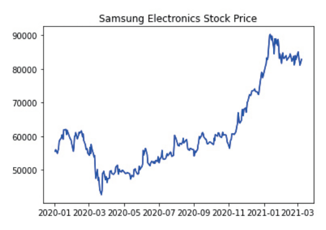
샘플화¶
# 라이브러리 포함
import FinanceDataReader as fdr
import numpy as np
import matplotlib.pyplot as plt
# 삼성전자 코드 = '005930', 2020년 데이터부터 다운로드
samsung = fdr.DataReader('005930', '2020')
# 시작가격
seq_data = (samsung[['Open']]).to_numpy() # 선형 그래프
plt.plot(seq_data, color = 'blue')
plt.title("Samsung Electronics Stock Price")
plt.xlabel("days")
plt.xlabel("")
plt.show()
seq_data = (samsung[['Open']]).to_numpy()
def make_sample(data, window):
train = [] # 공백 리스트 생성
target = []
for i in range(len(data) - window):
# 데이터의 길이만큼 반복(0 ~ len(data) - window)
train.append(data[i : i + window])
# i부터 (i+window-1) 까지를 저장
target.append(data[i + window])
# (i+window) 번째 요소는 정답
return np.array(train), np.array(target)
# 훈련 샘플과 정답 레이블 반환
X, y = make_sample(seq_data, 7)
# 윈도우 크기 = 7
print(X.shape, y.shape)
# 넘파이 배열의 형상 출력
print(X[0], y[0])
# 첫 번째 샘플 출력
# 출력 결과
#
# (284, 7, 1) (284, 1) # Rank = 3, Rank = 2 (1 생략 불가)
# [[55500]
# [56000]
# [54900]
# [55700]
# [56200]
# [58400]
# [58800]] [59600]
2절. 순환 신경망(RNN)¶
순환 신경망의 구조¶
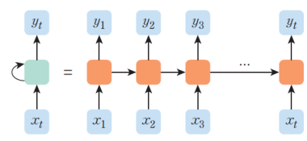
- MLP와 비슷하게 입력층, 은닉층, 출력층 보유(입력 벡터, 은닉 상태, 출력 벡터)
- 은닉 상태(은닉층)이 순환 엣지(Recurrent Edge) 보유
- 시간성, 가변 길이, 문맥 의존성 모두 처리 가능
- 순환 엣지는 \(t - 1\) 순간에 발생한 정보를 \(t\) 지점으로 전달하는 역할
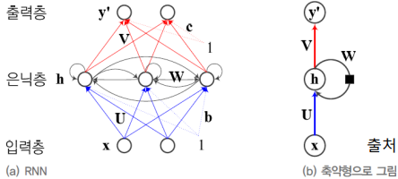
피드-포워드 신경망(Feed-Forward Neural Network)과 RNN¶
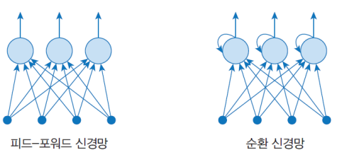
- 피드-포워드 신경망 : 여태까지 배웠던 신경망
단어 예측 RNN¶
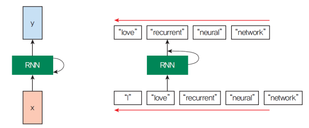
은닉 상태, 입력 벡터, 출력 벡터¶
- 은닉 상태 : 은닉층
- 입력 벡터 : 입력층
- 출력 벡터 : 출력층
ex) 주가 예측 신경망에서 지난 3일치의 데이터로 다음 날의 주가를 예측한다면 입력 벡터의 크기는 3
순환 신경망의 동작¶
- 활성화 함수 : tanh 함수
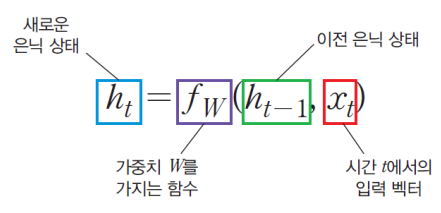
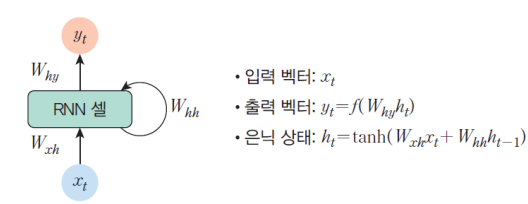
Vanilla RNN(Keras.SimpleRNN)¶
- 레이어의 출력을 다시 입력으로 받아서 사용
- 이전의 데이터가 함께 결과에 영향
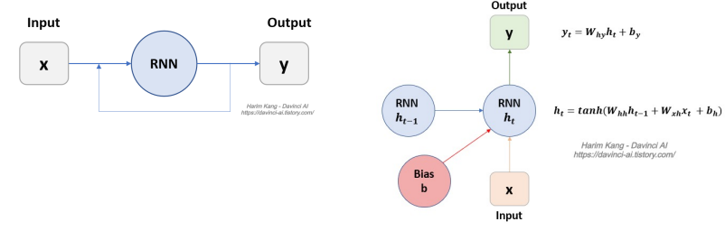
return_sequences¶
- RNN 계산과정에 있는 hidden state의 출력 여부 결정 값
- RNN, one-to-many, many-to-many 출력을 위해 사용
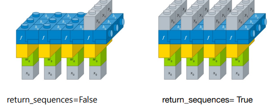
Ideal RNN Layer¶
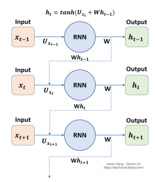
예제 1)¶
X = []
Y = []
for i in range(6):
lst = list(range(i,i + 4))
X.append(list(map(lambda c: [c / 10], lst)))
Y.append((i + 4)/10)
X = np.array(X)
Y = np.array(Y)
print(X)
print(Y)
# 출력(X)
# array([[[0. ], [0.1], [0.2], [0.3]],
# [[0.1], [0.2], [0.3], [0.4]],
# [[0.2], [0.3], [0.4], [0.5]],
# [[0.3], [0.4], [0.5], [0.6]],
# [[0.4], [0.5], [0.6], [0.7]],
# [[0.5], [0.6], [0.7], [0.8]]])
# 출력(Y)
# 0.4
# 0.5
# 0.6
# 0.7
# 0.8
# 0.9
예제 2)¶
model = Sequential()
model.add(SimpleRNN(50, return_sequences=False, input_shape=(4,1)))
model.add(Dense(1))
model.summary()
model.compile(loss = 'mse',
optimizer = 'adam',
metrics = ['accuracy'])
model.fit(X,Y,epochs=200, verbose=2)
print(model.predict(X))
X_test = np.array([[[0.8],[0.9],[1.0],[1.1]]])
print(model.predict(X_test))
# 출력(X)
# [[0.37884986]
# [0.5052986 ]
# [0.62007874]
# [0.72003114]
# [0.8036888 ]
# [0.87106013]]
# 출력(X_test)
# [[0.98860174]]
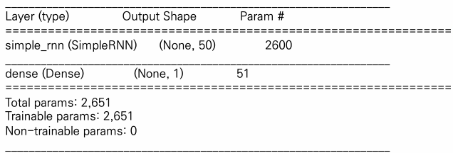
- 파라미터 아웃값 * (파라미터 아웃값 + 1(차원 수 1) + 1(바이어스)) + 덴스(Dense) 값
- \(50 * (50 + 1 + 1) + 51 = 2651\)
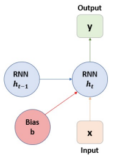
3절. 순환 신경망 유형¶
RNN 유형¶
- 일대일(One to One)
- 일대다(One to Many)
- 다대일(Many to One)
- 다대다(Many to Many)
일대일(One to One)¶
- 단일 입력과 단일 출력이 있는 가장 일반적인 신경망
- 다수의 머신 러닝 문제에 사용
- Vanilla Neural Network
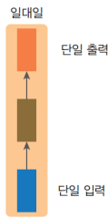
일대다(One to Many)¶
- 단일 입력으로 다수 출력 생성의 신경망
- 이미지 캡션을 생성하는 RNN에서 사용
- 하나의 이미지가 입력되면 이미지를 가장 잘 설명하는 캡션들 생성
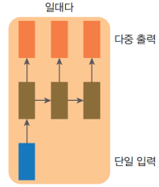
다대일(Many to One)¶
- 다수 입력으로 단일 출력 생성의 신경망
- 감정(Sentiment) 분석 신경망에 사용
- 주어진 문장들이 긍정적 OR 부정적 감정인지 분류
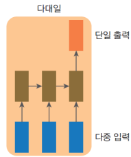
다대다(Many to Many)¶
- 다수 입력으로 다수 출력 생성의 신경망
- 기계 번역에서 사용되며 단어들이 계속 다른 단어들로 출력
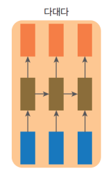
4절. 역전파 방향과 그래디언트¶
순환 신경망 순방향 패스¶
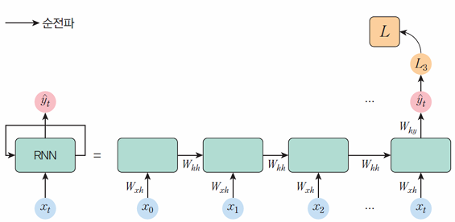
순방향 패스 알고리즘(Ideal)¶
hidden_state = [0, 0, 0, 0]
sentence = ["I", "love", "recurrent", "neural"]
for word in sentence:
hidden_state = np.tanh(np.dot(Wxh, word) + np.dot(Whh, hidden_state))
prediction = f(np.dot(Wxh, word) + np.dot(Why, hidden_state))
print(prediction)
# "network"
Keras에서의 순환 신경망¶
inputs = np.random.random([32, 10, 8]).astype(np.float32)
# 32개 샘플
# 각 샘플 당 10개의 시계열 데이터
# 하나의 데이터는 8개의 실수 형태
simple_rnn = tf.keras.layers.SimpleRNN(4)
# 4개의 셀
output = simple_rnn(inputs)
# 최종 은닉 상태로 [32, 4] 형상
- SimpleRNN(4)
- 셀이 4개인 RNN 레이어 생성
- 입력 : [batch, timesteps, feature]의 형상을 갖는 3차원 텐서
RNN에서의 입력 형상¶
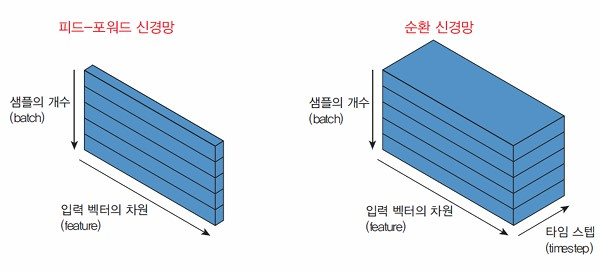
메모리 셀의 각 시점에서 모든 은닉 상태값 반환¶
simple_rnn = tf.keras.layers.SimpleRNN(4,
return_sequences=True,
return_state=True)
whole_sequence_output, final_state = simple_rnn(inputs)
# whole_sequence_output의 형상 : [32, 10, 4]
# final_state의 형상 : [32, 4]
시간에 따른 역전파(BPTT : Backpropagation Through Time)¶
- 계층을 통해 오류를 역전파하는 대신 시간을 거슬러 올라가면서 그래디언트 역전파
- 즉 현재의 역전파를 진행하고 싶다면 과거의 역전파 값을 알아야 하는 형태
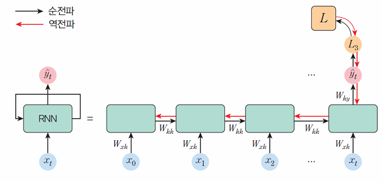
그래디언트 문제¶
- 1보다 작은 값이 여러 번 곱해지는 경우 : 그래디언트가 점점 감소(소멸)
- 1보다 큰 값이 여러 번 곱해지는 경우 : 그래디언트가 폭발적 증가(폭증)
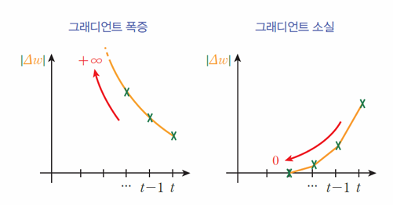
그래디언트 소실¶
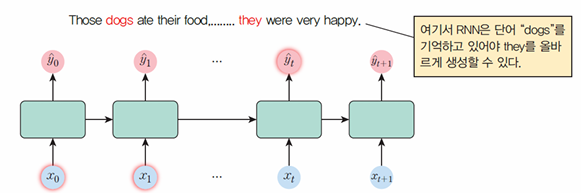
-
문제
-
학습이 진행될 때 먼 거리의 의존 관계를 파악하지 못하고 근거리의 의존 관계만 중시하는 문제
-
방안
- 활성화 함수를 ReLU로 변환
- 가중치를 단위 행렬로 초기화(바이어스를 0으로 초기화)
- 복잡한 순환 유닛인 LSTM, GRU같은 Gated Cell 사용 => 게이트들이 어떤 정보를 지나가게 할 것인지의 제어로 장기적 기억 가능
그래디언트 폭증¶
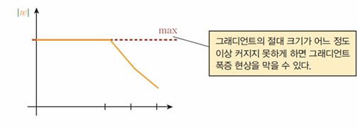
-
문제
-
그래디언트가 너무 커지는 문제
-
방안
- 그래디언트를 일정 크기 이상 커지지 못하도록 제한
예제) 사인파 예측 프로그램 - 1¶
import numpyas np
from tensorflow.keras.modelsimport Sequential
from tensorflow.keras.layersimport SimpleRNN
from tensorflow.keras.layersimport Dense
import matplotlib.pyplotas plt
def make_sample(data, window):
train = [] # 공백 리스트
target = []
for i in range(len(data)-window):
# 데이터의 길이만큼 반복
train.append(data[i:i+window])
# i부터 (i+window-1) 까지를 저장
target.append(data[i+window])
# (i+window) 번째 요소는 정답
return np.array(train), np.array(target)
# 파이썬 리스트를 넘파이로 변환
seq_data= []
for i in np.arange(0, 1000):
seq_data+= [[np.sin( np.pi* i* 0.01 )]]
X, y = make_sample(seq_data, 10)
# 윈도우 크기=10
model = Sequential()
model.add(SimpleRNN(10, activation='tanh', input_shape=(10,1)))
model.add(Dense(1, activation='tanh'))
model.compile(optimizer='adam', loss='mse')
history = model.fit(X, y, epochs=100, verbose=1)
plt.plot(history.history['loss'], label="loss")
plt.show()
# 출력
# ...
# Epoch 100/100
# 31/31 [==============================] - 0s 3ms/step
# - loss: 5.4923e-04
- 출력
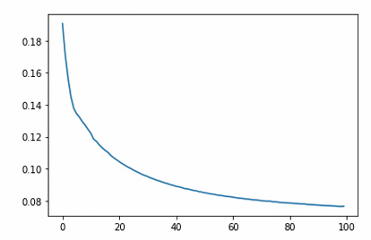
예제) 사인파 예측 프로그램 - 2¶
seq_data = []
for i in np.arange(0, 1000):
# 테스트 샘플 생성
seq_data += [[np.cos(np.pi * i * 0.01)]]
X, y = make_sample(seq_data, 10)
# 윈도우 크기 = 10
y_pred = model.predict(X, verbose=0)
# 테스트 예측값
plt.plot(np.pi * np.arange(0, 990)*0.01, y_pred )
plt.plot(np.pi * np.arange(0, 990)*0.01, y)
plt.show()
- 출력
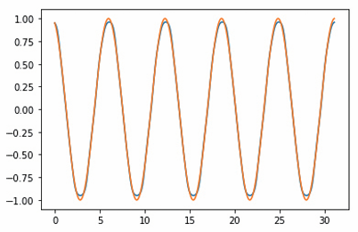
5절. LSTM(Long Short-Term Memory)¶
LSTM 신경망¶
- RNN은 그래디언트 소실 현상으로 초반의 입력이 뒤로 갈수록 점차 소실
- 즉, 다음 단어를 엉뚱하게 예측하는 장기 의존성 문제 발생
LSTM(Long Short-Term Memory)¶
-
개발 배경
-
RNN은 그래디언트 소실 현상으로 초반의 입력이 뒤로 갈수록 점차 소실
-
즉, 다음 단어를 엉뚱하게 예측하는 장기 의존성 문제 발생
-
기존 RNN을 훈련할 때 발생할 수 있는 그래디언트 소실 문제 해결을 위해 개발
- 셀, 입력 게이트, 출력 게이트, 삭제 게이트의 구성
- 셀 : 임의의 시점에 대한 값을 기억
- 게이트(입력, 망각, 출력) : 셀로 출입하는 정보의 흐름 조절
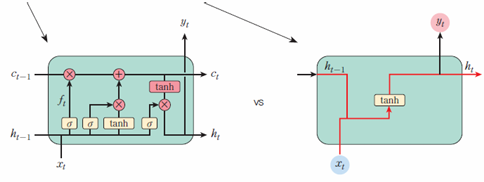
게이트¶
- LSTM의 주된 빌딩 블록
- 정보는 게이트를 통하여 추가 or 삭제
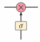
저장 연산¶
- 셀 상태에 관련있는 새로운 정보 저장
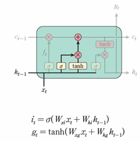
삭제 연산¶
-
예전 상태 중 일부 관련 없는 정보 삭제
-
삭제 게이트
- 기억 삭제를 위한 게이트
- 현재 시점의 입력 \(x_t\)와 이전 은닉상태 \(h_{t-1}\)이 시그모이드 함수를 거쳐 0과 1 사이의 값 출력
- 위의 값이 셀 상태에서 삭제를 결정하는 값
- 0에 가까울 경우 : 저장된 정보 다수 삭제
- 1에 가까울 경우 : 저장된 정보 다수 생존
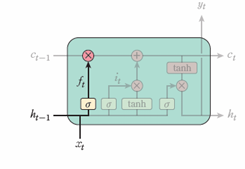
업데이트 연산¶
-
선택적으로 셀 상태 값 업데이트
-
셀 상태(\(c_t\)) : LSTM에서 장기 기억이 저장되는 장소
- 셀 상태를 계산
-
- 셀 상태에 삭제 게이트를 통해 들어온 값을 곱해 일부 기억 삭제
- 입력 게이트를 통한 값 합산
-
즉, 입력 게이트에서 선택된 기억 추기
-
삭제 게이트 : 이전 시점의 입력을 얼마나 기억할지 결정
- 입력 게이트 : 현재 시점의 입력을 얼마나 기억할지 결정
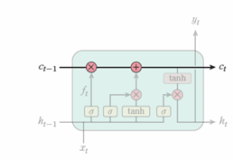
출력 연산¶
- 출력 게이트
- 현재 시점의 입력값과 이전 시점의 은닉 상태에 시그모이드 함수 적용
- 위의 결과값은 다음 시점의 은닉 상태 결정
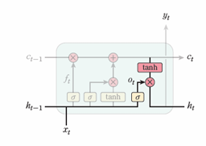
그래디언트 소실 문제 해결¶
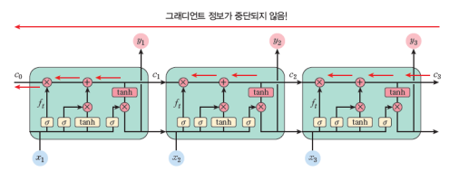
케라스에서의 LSTM¶
inputs = tf.random.normal([32, 10, 8])
lstm = tf.keras.layers.LSTM(4)
# 4개의 셀
output = lstm(inputs)
print(output.shape)
print(output)
# 출력
# (32, 4)
예제 : Keras를 활용한 주가 예측¶
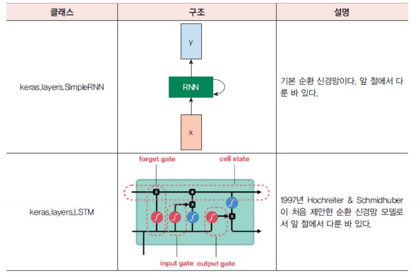
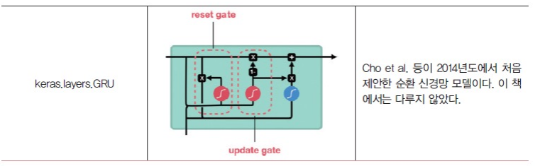
import FinanceDataReader as fdr
import numpy as np
import matplotlib.pyplot as plt
import pandas as pd
samsung = fdr.DataReader('005930', '2016')
print(samsung)
openValues = samsung[['Open']]
from sklearn.preprocessing import MinMaxScaler
scaler = MinMaxScaler(feature_range = (0, 1))
scaled = scaler.fit_transform(openValues)
TEST_SIZE = 200
train_data = scaled[:-TEST_SIZE]
test_data = scaled[-TEST_SIZE:]
def make_sample(data, window):
train = []
target = []
for i in range(len(data)-window):
train.append(data[i:i+window])
target.append(data[i+window])
return np.array(train), np.array(target)
X_train, y_train = make_sample(train_data, 30)
from tensorflow.keras.models import Sequential
from tensorflow.keras.layers import Dense
from tensorflow.keras.layers import LSTM
model = Sequential()
model.add(LSTM(16,
input_shape = (X_train.shape[1], 1),
activation='tanh',
return_sequences=False) )
model.add(Dense(1))
model.compile(optimizer = 'adam', loss = 'mean_squared_error')
model.fit(X_train, y_train, epochs = 100, batch_size = 16)
X_test, y_test = make_sample(test_data, 30)
pred = model.predict(X_test)
import matplotlib.pyplot as plt
plt.figure(figsize=(12, 9))
plt.plot(y_test, label='stock price')
plt.plot(pred, label='predicted stock price')
plt.legend()
plt.show()
- 출력 결과
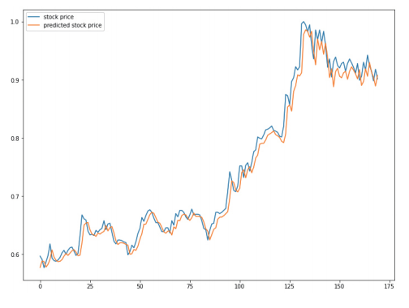